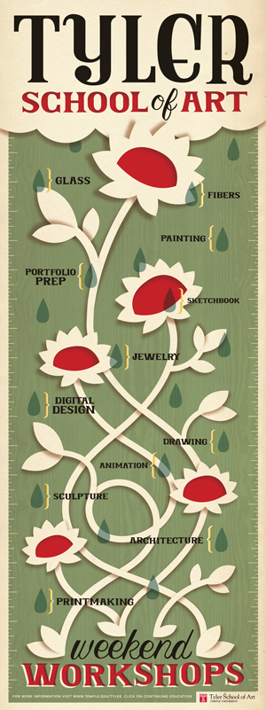
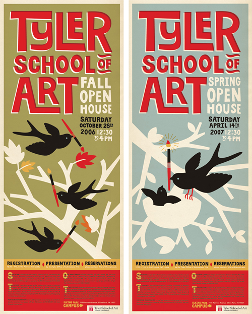
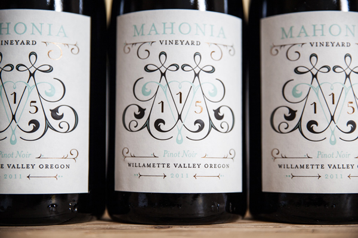
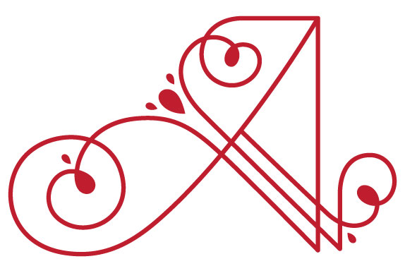
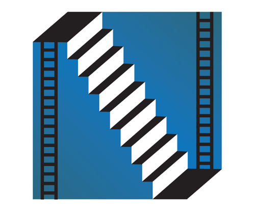
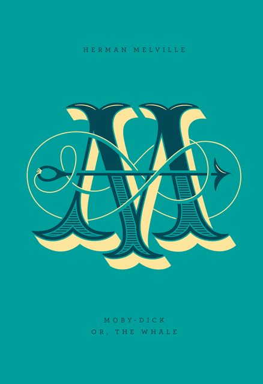
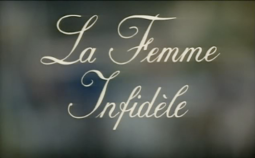
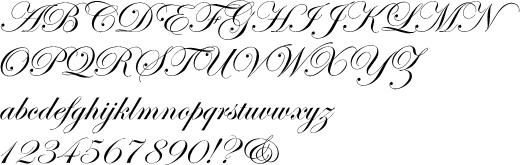
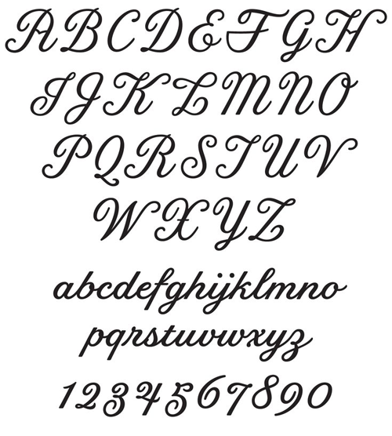

Jessica Hische
From the list that we were given one stuck out to me not because you have brought her up but because I knew a few things about her personality and I knew that she was a kick ass person. I looked through the other people a bit and looked at their work but I was still drawn towards her. I know it says in the title who I am looking at but the person I am looking at is Jessica Hische who is really an epic person as I said before.
I have been lost in a mountain of her work for a while now and it seems like I will never be able to find a bad piece of work. Jessica started to do lettering from high school onwards but as all ways she didn’t realise that she was actually good and that she could do it for a living at this time in her life. It wasn't until she went to university she realised that she was going somewhere with it. So she was lucky as she went to the Tyler School of Art were she had great lectures that pushed her and thought her what she needed to know at the time, too further her interests and passion with design. It funny as it wasn’t even until she was nineteen until she started to understand what graphic design was and what it is. This is why I like her so much it gives me hope that one day I can be able to make it as well but I know I have a long road ahead of me.
From The Beggining
At this time Jessica is more of an illustrator than a letter but she still used it in her works for university. There is one project that she can pin point where she started to realise that her path was lettering. This project was for her thesis when she was a student. It was based of the Game Of Life which is a board game were you have to see how far you can get in life and you can get into funny situations along the way. So with her idea she went for "Pack Your Baggage" which is centred around you growing up and leaving the house. The game is beautifully designed and the lettering is perfect but how did this start her journey in lettering? It started because she was a broke student at the time and didn't want to spend her last amount of money on fonts for the project so she made her own. I would love to be able to show you it but I could not find images of it any were. So this is when her passion for lettering started to flourish, with many other school projects containing lettering. Even her first client was her university which did pay her so it counted. She created a set of posters for them about things happening within the university, as you can see below this is one of them.
This is the first piece that she has done sense graduating from university and this were you see Jessica's illustration style start to form. As you can see the poster a whole works in every way. Firstly you have the beautiful illustration of the flowers and the background which creates a visual difference for the type and flowers to sit on top of it. You then move onto the letter were each parts works to give the poster a unique and interesting look. I personal like really like the all the type but I like the weekend at the bottom the most as it has an ever ending fluidity to the lettering.
So at this time in her life she is still mainly an illustrator with a tiny bit of lettering in sprinkled in there. Though this is where you can all ready see her starting to play with the layout of the lettering to take the fell of the poster in different ways and it gives.
So this is another set of posters that she created for her university. We are now starting to see her controlling the poster with the lettering by using hierarchy. Doing this allows you to get what's important into the views vision quicker, in this case it the university name. Doing this also allows you to create a cool layout for the information to flow as you can see she has made "art" a quarter smaller. This allowed her to fit in more important information with out in taking away from the rest of the poster.
Now sense she has done this with the lettering she can give the illustration more room to breathe. What I like about this poster as well is the use of colour throughout the poster as it ties each part into each other. As you have the use of red in the title but it is used again in the paint brushes which tells the viewer that the school is to do with are as its in red as well. I also then like the use of white accenting the title as it leads you onto the smaller but still important information.
To get her self out there and for people to start realising that she had talent she made a set of promo card which had a Christmas theme to them. Se sent them out to a hand full of designers that the time and none apart from one got back to her. The person who got back to her was Louise Fili the renouwned graphic designer who focused on food packaging and restaurant identities. So this is were you see her passion for lettering grow exponentially as she took this oppertunity to learn all that she could, she spent all day and night working on letter for Louise. She then went home and worked one her skills by doing free lance work which helped her home in her skills.
I was going to find a label that she has done with Fili bought before I could, I found one she has done sense leaving her mentor. You can see below that she has become a master at making labels in her time with Fili and she has now started to apply it other clients. I love all aspects of this label, though what I like the most is the use of colour to tie in the label as a whole. You have at least each colour used nine times some even more. As I said it bringing the whole label together and it is also reinforcing the colour scheme of the company. Before I more the MV monogram that she done, now this is just mind numbingly good I have picked up on a few things that about the monogram. This first is that you have everything pointing inwards, each swirl that accents the letters in inwards and you even have the arrows on the label doing so. What this is doing is making everything seem important (it all is), and it keeps on making the viewer look at the centre which then reinforces the logo/ brand. The last one is about the actual letters in the monogram they are quite similar to each other, if you look closely at the upwards strokes on the V and the downward strokes of the M. They are more and less the same only with minor differences in them. The reason for this is that it also keeps the label looking like a whole, as if had any more differences in them they might start to look like they are not meant to be together.
It is known that every artist has something that they are good at/ known for and for Jessica it is ribbon type. This is her forte as she does it continuality in side projects and now she is getting clients from it. With ribbons being the thing she is known for she only gets to do it for a few months then it goes out of style as ribbons are quite Christmassy. She gets most work/projects containing ribbons from the end of August to early January and then its good by ribbons for another year.
What I like about Jessica is that she is trying to teach people about lettering and not keeping all the things that have made her successful to herself. I know this because I am taking part in her Skillshare class at the moment. She only has one but teaching takes time and she doesn't have much of it with being a freelance letterer and illustrator. It not even the fact that she is teaching she is her work, as she puts her personality into each piece and she is so open to everyone on the web.
One Drop Cap at a Time
One of the biggest projects that Jessica has done and is still doing is a project called The Daily Drop Cap. This is where she illustrates a drop cap of her choice in any manner she seems fit. Why this is her biggest project, is because it brought her into the global spot light. As soon as she released this project to the public it went viral, everyone in the design world was talking about her and the project.
This is one the many A's that she has done for the drop cap. This is one of the more classical style with staying inside the realms of the lettering world.
You then have ones like this here, if you can't see it is an N. I love the fact that she is challenging both her abilities with this project. As a lot of them are cool illustrations of the letters.
With this project getting so much spot light she has gotten work from it and one of the more important ones was with Penguin the book company. She collaborated with the art director at Penguin, Paul Buckley to make a series of twenty-six hardcover editions of the classic literature. I don't like to think things our perfect but these have been taken down to the finest detail as I know what type of person Jessica is and this is was her time to shine even brighter. As you can see below this is some of the covers and you can see why they are perfect at the level of detail that has went into them. I unfortunately haven't read any of the books so I don't get some of the quirky things that tie into the story of the book. I have seen the Moby-Dick cover before and never realised the detail that went into it. Now when I look at the Moby-Dick cover it is obvious that the serifs are tails of the whale. Then you have the spear that tried to take it down which adds flare to the whole piece and completes the illustration.
This actually is the story of the book on the cover as well. As to me the M is representing the whale and the spar is raping around it closing in ever so slightly until it hits it mark. This is just one of the covers that has this level of thought into them and the rest are as brilliant in their own right.
Recently Jessica has worked with the amazing director Wes Anderson. I don't know is she actually worked with him but she made the font that was used for the movie poster and even more recently she has turned it into a font which you can buy. The movies that she made it for was Moonrise Kingdom which is a fantastic movie and the font suites if perfectly as Jessica took her time to research fonts to in the era of the movie. The movie is based in the early 60's so one of the fonts that she was looking at as Ed Benguiat's Edwardian Script and her font is loosely based on it but she went more towards the style of title fonts from Chabrol films.
You can see below an example of Ed Benguiat's Edwardian Script and above is a typical title font from a Chabrol film. I am very glad that she went in this direction as its much cleaner and suits the film but mostly even more so the director.
You can see below the font that she created with this inspiration and knowledge of fonts from that era. Everything about the font is perfect in my eyes but that doesn't mean much. I like all the little nuances that the each individual letter had like the letter X for some reason the line that goes through it completes it and if it wasn't there I think it would look of in some way as one side looks heavier with more twirls in the serifs
A Personal Touch
What amazes me about Jessica is how real she is, well at least it seems that way. Through researching her and watching a good few videos that she has been in I feel like I could talk to her for hours as I know she is into her movies and many other things which interest me. I know it's not just me that fells this weird bond with her as she has a very big following which has all ways got her back. As she said in one video that people email her telling her when a Daily Drop Cap gets used without permission. This is why I think that she has been so successful she just hasn't done amazing hand lettering and put that out there, she has put herself out there as well.
I could go on for pages longer and would be happy to do so as her work just amazes me with the level of thought that gets put into them to make each part work with each other to make something brilliant.
What Do Designers Bring to Design?
I nearly got mixed up and worte about another list of desingers that you had on the modules GitHub page. The reason that I bring this up is because I liked the question that you posed about the designers and so on. That question was what have they brought to the world of design. I have wrote about many projects that Jessica has done but the one thing that all designers and Jessica included bring the world of design is inspiration. Jessica has inspired so many people to find out what lettering is for themselfs, I know this first hand as she has helped me understand this is what I want to do an it will take time and effort but you can get there in the end.